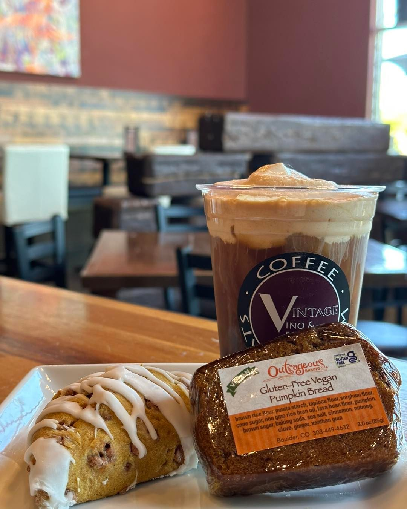
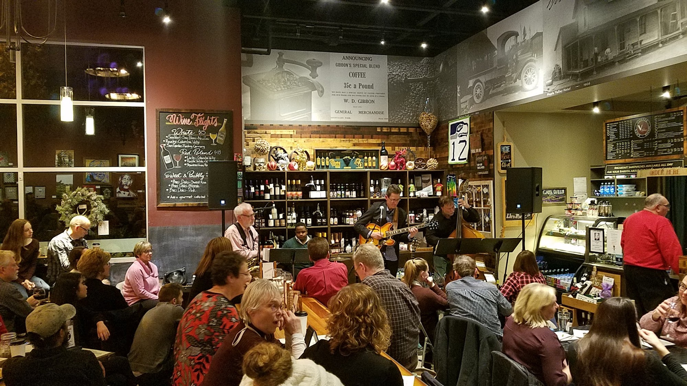
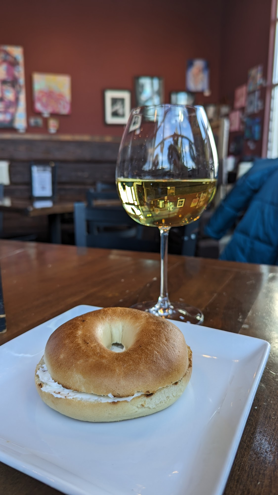

Coffee · Wine · Maple Valley
Vintage
Vino& espresso
Good coffee.
Good wine.
Even better company.


Your morning ritual.
Your evening refuge.
When to find us
A little time, well spent.
See today’s hours
24081 SE 264th St, Suite N-100
Maple Valley, WA 98038
Open in Maps ↗
- Monday6:00 AM – 7:00 PM
- Tuesday6:00 AM – 7:00 PM
- Wednesday6:00 AM – 7:00 PM
- Thursday6:00 AM – 7:00 PM
- Friday6:00 AM – 8:00 PM
- Saturday7:00 AM – 9:00 PM
- Sunday7:00 AM – 5:00 PM
Make yourself at home
Good things, all day long.
Something for the morning rush. Something to share. Something worth staying for.
Coffee & espresso
Your familiar favorite, or a new way to take your coffee.
- Latte
- Cappuccino
- Americano
- Mocha
- White chocolate
- Caramel macchiato
- Fresh-brewed coffee
- Cold brew
A little something differentBlended mocha, caramel or white chocolate. Tea lattes, hot chocolate, and vanilla or spiced chai.
A bite to eat
A quick breakfast or a few good things for the table.
- Start the day
- Breakfast sandwiches & bagels
- Small plates
- Pretzel & beer cheese · Stuffed mushrooms · Bruschetta · Spinach & artichoke dip
- Stay for a bite
- Chicken breast sandwiches, caprese salad, and flatbreads including pesto & Greek veggie
- For the table
- Artisan cheese & cured-meat boards
Wine & beer
Wine on the shelves, a glass at the table, and time to enjoy it.
- Find your glass
- Red, white & sparkling wines
- Prefer a beer?
- Ask at the bar for the current beer selection.
- Make a pairing
- Choose a cheese or charcuterie board to share alongside your wine.
Ask the team about today’s bottles and by-the-glass pours.
Music & making
A reason to gather beyond your usual coffee stop.
- Live music
- Local performers and acoustic sets in the cafe. See the latest artist announcements and dates.
- The Social Craft Club
- Creative evenings hosted by McPherson Studios, with event details and tickets available online.
A glimpse of Vintage
More than your usual stop.


Your kind of moment
What brings you in?



Showing: A good coffee

A familiar place in Maple Valley
Pull up a chair.
There’s time.
A warm room, a good drink, and a reason to stay a little longer.
Vintage brings morning coffee and evenings over wine together under one roof. The shelves hold bottles, the counter has something good, and live music turns an ordinary stop into a night out.
Creative nights give neighbors another reason to gather. Find the current dates and details before you visit.
See the craft club ↗From the neighborhood
Get to know us through our guests.
4.1★★★★☆
On Google
Coffee breaks, evening conversations and the little moments in between. Read what guests have to say.
Read our reviews ↗We’ll see you here
A question before you stop by?
For today’s offerings, evening hours or what’s happening next, give the cafe a call.
Your next good moment
See you at Vintage.
Make a little room in your day.